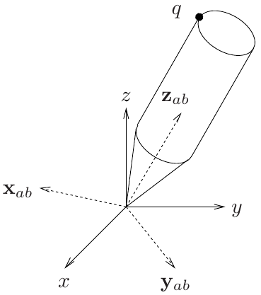
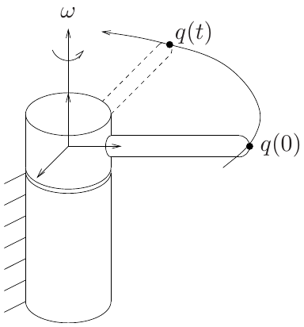
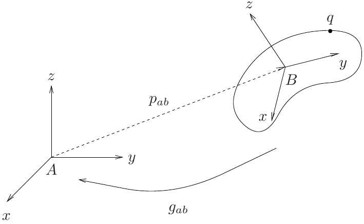
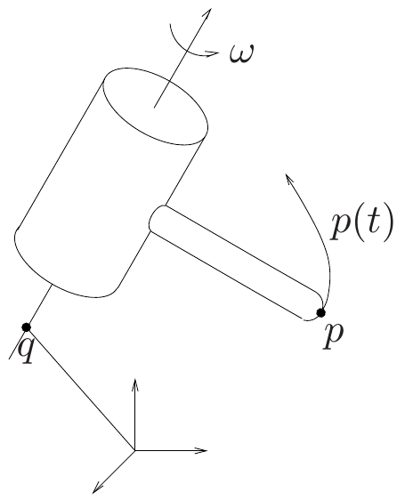
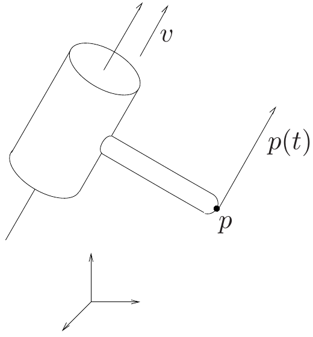

Rigid Body Motion
Kinematics and Machine Dynamics · Chapter 5
Chapter overview
- Rigid transformations and coordinate frames (§5.1)
- Rotation matrices and their properties (§5.2.1)
- Axis-angle, exponential coordinates, and Euler angles (§§5.2.2–5.2.3)
- Homogeneous transformations (§5.3.1)
- Twists and exponential rigid motion (§5.3.2)
Goal: express the position and orientation of a rigid body without ambiguity about frames or rotation order.
The rigid-body idealization
A rigid body maintains the distance between every pair of material points:
\|p(t)-q(t)\|=\|p(0)-q(0)\|.
- A rigid motion is a continuous history of configurations.
- A rigid displacement relates an initial and a final configuration.
- A general displacement combines translation and rotation.
Deformation is neglected; individual points can still move relative to the fixed reference frame.
Points, vectors, and frames
A point specifies a location. A free vector specifies a magnitude and direction.
v=q-p.
The same vector can connect different pairs of points.
A frame supplies an origin and three orthonormal axes. We use right-handed frames:
e_1\times e_2=e_3.
Coordinates have meaning only after a frame has been specified.
Distance preservation is not enough
The map (x,y,z)\mapsto(x,y,-z) preserves lengths but reflects the body.
A proper rigid transformation g must preserve both:
\|g(p)-g(q)\|=\|p-q\|, g_*(v\times w)=g_*(v)\times g_*(w),
where g_*(q-p)=g(q)-g(p) is the induced transformation of vectors.
The second condition preserves the handedness of coordinate frames.
Inner products and angles
Lengths determine inner products through the polarization identity:
v\cdot w=\frac14\left(\|v+w\|^2-\|v-w\|^2\right).
For the induced linear map on free vectors,
g_*(v)\cdot g_*(w)=v\cdot w.
Consequently, a rigid transformation preserves angles and orthogonality. A right-handed orthonormal body frame remains right-handed and orthonormal.
Orientation of a body frame

Compiled notes, Fig. 5.1; chapter based on Murray, Li, and Sastry.
Let A be the reference frame and B the body frame.
The columns of R_{ab} are the axes of B, expressed in A:
R_{ab}=\begin{bmatrix}x_{ab}&y_{ab}&z_{ab}\end{bmatrix}.
With coincident origins,
q_a=R_{ab}q_b.
Reading the frame subscripts
\boxed{v_a=R_{ab}v_b}
R_{ab} maps coordinates from B to A.
- The right subscript matches the input coordinates.
- The left subscript identifies the output coordinates.
- The physical vector is unchanged; its coordinate description changes.
The same matrix can describe an active rotation of a vector in a fixed frame. State which interpretation is being used.
The rotation group
Orthonormal columns imply
R^\mathsf{T}R=I,\qquad R^{-1}=R^\mathsf{T}.
A right-handed frame also requires \det R=+1.
\boxed{SO(3)=\{R\in\mathbb R^{3\times3}:R^\mathsf{T}R=I,\ \det R=1\}.}
An orthogonal matrix with determinant -1 includes a reflection.
More generally, SO(n) uses the same conditions for n\times n matrices.
Why rotations form a group
For R_1,R_2\in SO(3):
- Closure: (R_1R_2)^\mathsf{T}(R_1R_2)=I and \det(R_1R_2)=1.
- Identity: I leaves every vector unchanged.
- Inverse: R^{-1}=R^\mathsf{T}\in SO(3).
- Associativity: (R_1R_2)R_3=R_1(R_2R_3).
The configurations of a body rotating about a fixed point form SO(3). Its motion is a curve R(t) in that space.
Elementary rotations
With c=\cos\theta and s=\sin\theta,
R_x(\theta)=\begin{bmatrix}1&0&0\\0&c&-s\\0&s&c\end{bmatrix},\qquad R_y(\theta)=\begin{bmatrix}c&0&s\\0&1&0\\-s&0&c\end{bmatrix},
R_z(\theta)=\begin{bmatrix}c&-s&0\\s&c&0\\0&0&1\end{bmatrix}.
Positive angles follow the right-hand rule; angles in formulas are in radians.
Worked example: a quarter-turn
Rotate q=(2,1,0)^\mathsf{T} actively by 90^\circ about the fixed +z axis:
q'=R_z(\pi/2)q= \begin{bmatrix}0&-1&0\\1&0&0\\0&0&1\end{bmatrix} \begin{bmatrix}2\\1\\0\end{bmatrix} =\begin{bmatrix}-1\\2\\0\end{bmatrix}.
Checks: both vectors have length \sqrt5; applying R_z(-\pi/2) recovers q.
If R_{ab}=R_z(\pi/2) instead describes a frame orientation, the same multiplication converts q_b into q_a.
Composing rotations
q_a=R_{ab}q_b,\qquad q_b=R_{bc}q_c
therefore
\boxed{R_{ac}=R_{ab}R_{bc}.}
Apply the rightmost transformation first.
For active rotations: a rotation about a fixed-frame axis premultiplies the current orientation; a rotation about a body-frame axis postmultiplies it.
Rotation order matters
Let e_z=(0,0,1)^\mathsf{T} and use active fixed-axis rotations.
R_z(\pi/2)R_x(\pi/2)e_z=e_x, R_x(\pi/2)R_z(\pi/2)e_z=-e_y.
Thus R_zR_x\ne R_xR_z in general.
Associativity lets us regroup products. It does not let us exchange their order.
The hat map and the cross product
For a=(a_1,a_2,a_3)^\mathsf{T}, define
\widehat a=\begin{bmatrix}0&-a_3&a_2\\a_3&0&-a_1\\-a_2&a_1&0\end{bmatrix}.
Then
\widehat a\,b=a\times b,\qquad \widehat a^\mathsf{T}=-\widehat a.
The vee map reverses the construction: (\widehat a)^\vee=a.
The set of 3\times3 skew-symmetric matrices is denoted \mathfrak{so}(3).
Rotations preserve cross products
For R\in SO(3),
R(v\times w)=(Rv)\times(Rw), \boxed{R\widehat wR^\mathsf{T}=\widehat{Rw}.}
Lengths are preserved because
\|R(q-p)\|^2=(q-p)^\mathsf{T}R^\mathsf{T}R(q-p)=\|q-p\|^2.
Together these properties establish that rotations are proper rigid transformations.
Rotation about an axis

Compiled notes, Fig. 5.2.
Let u be a unit vector along an axis through the origin, and let \theta be the rotation angle.
\frac{dq}{d\theta}=u\times q=\widehat u q.
The solution is
q(\theta)=e^{\widehat u\theta}q(0).
Hence R(u,\theta)=e^{\widehat u\theta}.
The matrix exponential
e^{\widehat u\theta}=I+\theta\widehat u+ \frac{\theta^2}{2!}\widehat u^2+\frac{\theta^3}{3!}\widehat u^3+\cdots.
For a unit axis u,
\widehat u^2=uu^\mathsf{T}-I,\qquad \widehat u^3=-\widehat u.
Higher powers reduce to I, \widehat u, and \widehat u^2. Grouping odd and even powers produces the sine and cosine series.
Rodrigues’ formula
For \|u\|=1,
\boxed{R(u,\theta)=I+\widehat u\sin\theta+\widehat u^2(1-\cos\theta).}
For a general rotation vector \phi, put \vartheta=\|\phi\|:
e^{\widehat\phi}=I+\frac{\sin\vartheta}{\vartheta}\widehat\phi +\frac{1-\cos\vartheta}{\vartheta^2}\widehat\phi^2.
At \vartheta=0, take the continuous limit: e^0=I. Near zero, use series or numerically stable implementations.
Why the exponential is a rotation
Since \widehat u^\mathsf{T}=-\widehat u,
(e^{\widehat u\theta})^\mathsf{T}e^{\widehat u\theta} =e^{-\widehat u\theta}e^{\widehat u\theta}=I.
The determinant is +1: it varies continuously from \det I=1 and an orthogonal matrix’s determinant is always \pm1.
Every rotation in SO(3) has an axis-angle representation, though that representation is not unique.
Recovering axis and angle
For a valid R\in SO(3), choose the principal angle 0\le\theta\le\pi:
\theta=\cos^{-1}\!\left(\frac{\operatorname{tr}R-1}{2}\right).
When 0<\theta<\pi,
u=\frac{1}{2\sin\theta} \begin{bmatrix}r_{32}-r_{23}\\r_{13}-r_{31}\\r_{21}-r_{12}\end{bmatrix}.
In floating-point arithmetic, clip the inverse-cosine argument to [-1,1] after checking that R is a valid rotation.
Axis-angle special cases
- \theta=0: R=I; the axis is arbitrary.
- \theta=\pi: the formula dividing by \sin\theta is undefined. Find a unit eigenvector satisfying Ru=u, or use R+I=2uu^\mathsf{T}.
- Nonuniqueness: (u,\theta) and (-u,-\theta) produce the same rotation; adding 2\pi also preserves it.
Example: R=\operatorname{diag}(1,-1,-1) is a half-turn about e_x.
The rotation vector is \phi=u\theta; it is a coordinate representation, not a globally unique label.
ZYZ Euler angles
Starting with coincident frames, rotate about the moving axes:
- z by \alpha;
- the new y by \beta;
- the new z by \gamma.
\boxed{R=R_z(\alpha)R_y(\beta)R_z(\gamma).}
The axes and their order are part of the definition. Three numbers without a convention do not specify an orientation.
ZYZ matrix and angle recovery
Write c_\alpha=\cos\alpha, s_\alpha=\sin\alpha, and similarly for the other angles.
R=\begin{bmatrix} c_\alpha c_\beta c_\gamma-s_\alpha s_\gamma&-c_\alpha c_\beta s_\gamma-s_\alpha c_\gamma&c_\alpha s_\beta\\ s_\alpha c_\beta c_\gamma+c_\alpha s_\gamma&-s_\alpha c_\beta s_\gamma+c_\alpha c_\gamma&s_\alpha s_\beta\\ -s_\beta c_\gamma&s_\beta s_\gamma&c_\beta \end{bmatrix}.
For the branch 0<\beta<\pi,
\begin{aligned} \beta&=\operatorname{atan2}(\sqrt{r_{31}^2+r_{32}^2},r_{33}),\\ \alpha&=\operatorname{atan2}(r_{23},r_{13}),\qquad \gamma=\operatorname{atan2}(r_{32},-r_{31}). \end{aligned}
Euler singularities and other conventions
At \beta=0,
R_z(\alpha)R_y(0)R_z(\gamma)=R_z(\alpha+\gamma).
Only the sum is determined: \alpha and \gamma cannot be recovered separately. ZYZ also has a singularity at \beta=\pi.
A common yaw–pitch–roll convention is
R=R_z(\psi)R_y(\vartheta)R_x(\varphi).
This is intrinsic ZYX, equivalently fixed-axis roll, then pitch, then yaw. Do not mix it with intrinsic XYZ.
Position and orientation together

Compiled notes, Fig. 5.3.
Let p_{ab} locate the origin of B in A.
\boxed{q_a=p_{ab}+R_{ab}q_b.}
A configuration is described by translation and orientation:
SE(3)\cong\mathbb R^3\times SO(3)
as a set of configurations.
Homogeneous coordinates
Represent points and free vectors differently:
\bar q=\begin{bmatrix}q\\1\end{bmatrix},\qquad \bar v=\begin{bmatrix}v\\0\end{bmatrix}.
The affine map becomes a matrix multiplication:
g_{ab}=\begin{bmatrix}R_{ab}&p_{ab}\\0&1\end{bmatrix},\qquad \bar q_a=g_{ab}\bar q_b.
For a vector, g_{ab}\bar v_b=(R_{ab}v_b,0)^\mathsf{T}: translation cancels.
Composing and inverting rigid transforms
\boxed{g_{ac}=g_{ab}g_{bc} =\begin{bmatrix}R_{ab}R_{bc}&p_{ab}+R_{ab}p_{bc}\\0&1\end{bmatrix}.}
Rotate p_{bc} into frame A before adding it to p_{ab}.
\boxed{g_{ab}^{-1}=g_{ba} =\begin{bmatrix}R_{ab}^\mathsf{T}&-R_{ab}^\mathsf{T}p_{ab}\\0&1\end{bmatrix}.}
Closure, identity, inverses, and associativity make these matrices the group SE(3).
Worked example: a transformed point
Let R_{ab}=R_z(\pi/2), p_{ab}=(1,2,0)^\mathsf{T}, and q_b=(2,0,0)^\mathsf{T} m.
q_a=\begin{bmatrix}1\\2\\0\end{bmatrix} +\begin{bmatrix}0&-1&0\\1&0&0\\0&0&1\end{bmatrix} \begin{bmatrix}2\\0\\0\end{bmatrix} =\begin{bmatrix}1\\4\\0\end{bmatrix}\ \mathrm m.
The inverse check is q_b=R_{ab}^\mathsf{T}(q_a-p_{ab}).
For the free vector v_b=(2,0,0)^\mathsf{T} m, v_a=(0,2,0)^\mathsf{T} m. Do not add p_{ab} to it.
Rotation about an offset axis

Compiled notes, Fig. 5.4(a); axis direction \omega in the figure is u here.
For unit axis u through a fixed point q,
\frac{dp}{d\theta}=u\times(p-q) =\widehat u p+v, v=-u\times q.
This motion includes a translation when the axis does not pass through the coordinate origin.
Twist coordinates
Use the linear-first ordering of the textbook:
\xi=\begin{bmatrix}v\\u\end{bmatrix}\in\mathbb R^6,\qquad \widehat\xi=\begin{bmatrix}\widehat u&v\\0&0\end{bmatrix}\in\mathfrak{se}(3).
The wedge map builds \widehat\xi from \xi; the vee map reverses it.
\frac{d\bar p}{d\theta}=\widehat\xi\bar p \quad\Longrightarrow\quad \bar p(\theta)=e^{\widehat\xi\theta}\bar p(0).
A twist is a generator of rigid motion. For a revolute axis, v is generally not the velocity of the selected body origin.
Prismatic motion

Compiled notes, Fig. 5.4(b).
For a unit translation direction v, use
\widehat\xi=\begin{bmatrix}0&v\\0&0\end{bmatrix}.
Since \widehat\xi^2=0,
e^{\widehat\xi s}=\begin{bmatrix}I&sv\\0&1\end{bmatrix}.
Here s is a length, not an angle.
Computing a twist exponential
For \|u\|=1 and \widehat\xi=\begin{bmatrix}\widehat u&v\\0&0\end{bmatrix},
e^{\widehat\xi\theta}=\begin{bmatrix}R(\theta)&V(\theta)v\\0&1\end{bmatrix}, V(\theta)=I\theta+(1-\cos\theta)\widehat u +(\theta-\sin\theta)\widehat u^2.
For a pure revolute joint through q, v=-u\times q, so
V(\theta)v=(I-R(\theta))q.
The closed form follows by integrating R(\tau)v from 0 to \theta.
Worked example: an offset revolute joint
Let u=e_z, let the axis pass through q=(1,0,0)^\mathsf{T} m, and rotate by \pi/2.
v=-e_z\times q=(0,-1,0)^\mathsf{T}\ \mathrm m, p_{\rm trans}=(I-R_z(\pi/2))q=(1,-1,0)^\mathsf{T}\ \mathrm m.
For an initial point p(0)=(2,0,0)^\mathsf{T} m,
p(\pi/2)=R_z(\pi/2)p(0)+p_{\rm trans}=(1,1,0)^\mathsf{T}\ \mathrm m.
Its distance from the axis remains 1 m.
Displacement versus frame conversion
A frame transformation relates two coordinate descriptions:
\bar q_a=g_{ab}\bar q_b.
An exponential displacement moves points while keeping one reference frame:
\bar p(\theta)=e^{\widehat\xi\theta}\bar p(0).
For a generator expressed in the fixed frame,
\boxed{g_{ab}(\theta)=e^{\widehat\xi\theta}g_{ab}(0).}
The initial pose need not be the identity. Every proper rigid displacement can be represented by a twist exponential.
Chapter summary and references
- SO(3) represents orientation; SE(3) represents position and orientation.
- Frame subscripts determine valid matrix products.
- Axis-angle and Euler coordinates need special-case handling.
- Homogeneous coordinates distinguish points from vectors.
- Twist exponentials describe joint displacements.
Reading: compiled notes, Chapter 5, pp. 17–33; Murray, Li, and Sastry, A Mathematical Introduction to Robotic Manipulation, Chapter 2 (author’s book page).

← Course Home · Kinematics and Machine Dynamics · Chapter 5